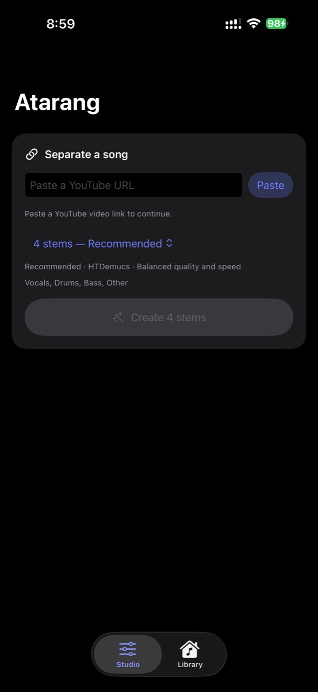
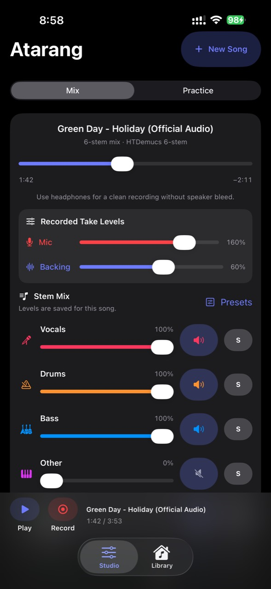
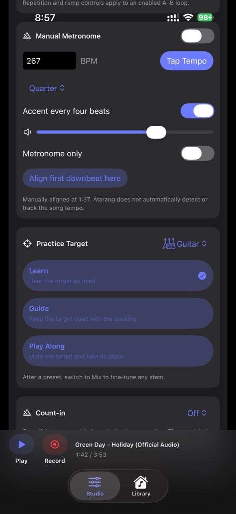
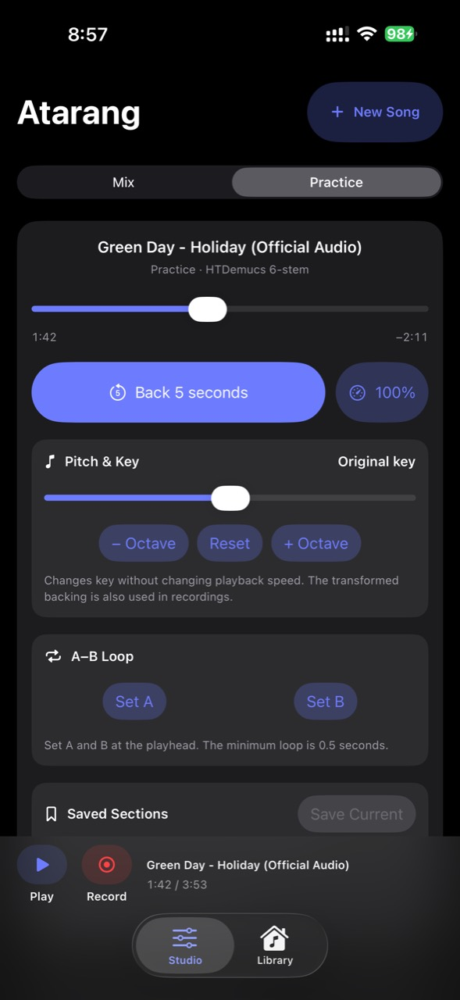

Your song.Your part.
Paste a YouTube link. Atarang splits the track into as many as six stems, right on your phone — then mutes the one you play.
Three taps to
a backing track.
Paste a link
Any youtube.com or youtu.be URL. Atarang pulls the audio down and keeps it.

Choose a split
Two, four, or six stems across four models. The separation runs on the phone's Neural Engine.

Take a part
Mute your stem, count yourself in, and record your take against the rest of the band.

Most tools stop
at separation.Atarang starts there.
-
Loop one phrase until it's yours
Mark an A–B loop, nudge the edges, and save named sections you can drop back into next session.
-
Slow it down. Change the key.
Adjust speed without touching pitch, or transpose the backing by semitones without touching tempo.
-
Count it in
Tap the tempo, pick a subdivision, accent the downbeat, and align the click to the song by hand.
-
Build to performance speed
Set a repetition target, add a breath between passes, and ramp from comfortable to full tempo automatically.

No backend. No account.Nothing uploaded.
Separation, mixing, playback and recording all happen on your iPhone. Atarang touches the network for exactly two things: fetching the track you asked for, and downloading an optional model the first time you pick it.
Build it
yourself.
Atarang is a personal, sideloaded project rather than an App Store release. Clone the repository, sign it with your own Apple Developer team, and run it on your phone.
- A Mac with Xcode and the iOS 17 SDK
- Git LFS, installed before you clone
- An Apple Developer account for signing
- An iPhone or iPad running iOS 17 or later
Only download audio you have permission to use, and follow YouTube's terms. This build is not designed or suitable for App Store distribution.